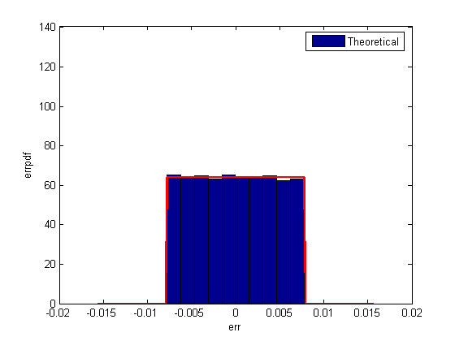
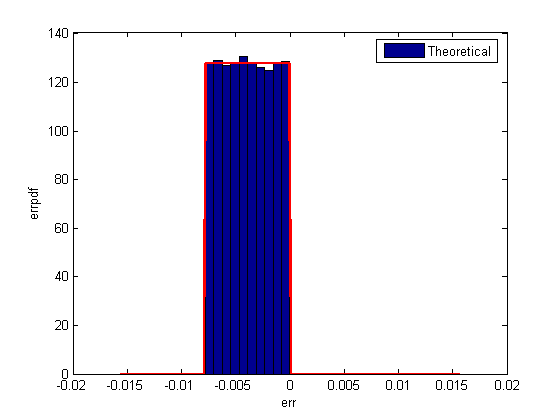
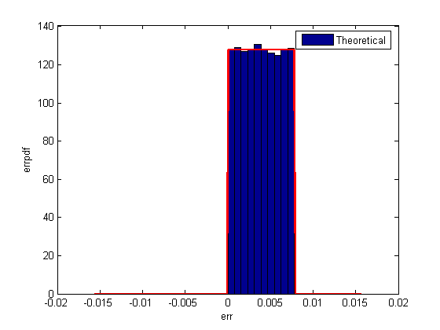
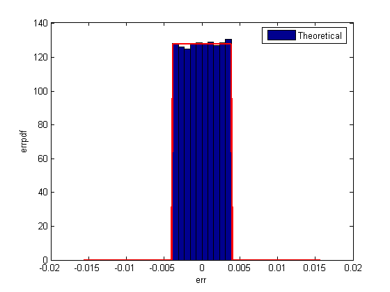

This is a demonstration of the statistics of the error when signals are quantized using various rounding methods.
First, a random signal is created that spans the range of the quantizer.
Next, the signal is quantized, respectively, with roundmodes 'fix', 'floor', 'ceil', 'round', and 'convergent', and the statistics of the signal are estimated.
The theoretical probability density function of the quantization error will be computed with ERRPDF, the theoretical mean of the quantization error will be computed with ERRMEAN, and the theoretical variance of the quantization error will be computed with ERRVAR.
First we create a uniformly distributed random signal that spans the domain -1 to 1 of the fixed-point quantizers that we will look at.
q = quantizer([8 7]);
r = realmax(q);
u = r*(2*rand(50000,1) - 1); % Uniformly distributed (-1,1)
xi=linspace(-2*eps(q),2*eps(q),256);
Notice that with 'fix' rounding, the probability density function is twice as wide as the others. For this reason, the variance is four times that of the others.
q = quantizer('fix',[8 7]); err = quantize(q,u) - u; f_t = errpdf(q,xi); mu_t = errmean(q); v_t = errvar(q); % Theoretical variance = eps(q)^2 / 3 % Theoretical mean = 0 qerrordemoplot(q,f_t,xi,mu_t,v_t,err)
Estimated error variance (dB) = -46.9248 Theoretical error variance (dB) = -46.9154 Estimated mean = -4.2134e-005 Theoretical mean = 0
Floor rounding is often called truncation when used with integers and fixed-point numbers that are represented in two's complement. It is the most common rounding mode of DSP processors because it requires no hardware to implement. Floor does not produce quantized values that are as close to the true values as ROUND will, but it has the same variance, and small signals that vary in sign will be detected, whereas in ROUND they will be lost.
q = quantizer('floor',[8 7]); err = quantize(q,u) - u; f_t = errpdf(q,xi); mu_t = errmean(q); v_t = errvar(q); % Theoretical variance = eps(q)^2 / 12 % Theoretical mean = -eps(q)/2 qerrordemoplot(q,f_t,xi,mu_t,v_t,err)
Estimated error variance (dB) = -52.9355 Theoretical error variance (dB) = -52.936 Estimated mean = -0.0039176 Theoretical mean = -0.0039063
q = quantizer('ceil',[8 7]); err = quantize(q,u) - u; f_t = errpdf(q,xi); mu_t = errmean(q); v_t = errvar(q); % Theoretical variance = eps(q)^2 / 12 % Theoretical mean = eps(q)/2 qerrordemoplot(q,f_t,xi,mu_t,v_t,err)
Estimated error variance (dB) = -52.9355 Theoretical error variance (dB) = -52.936 Estimated mean = 0.0038949 Theoretical mean = 0.0039063
Round is more accurate than floor, but all values smaller than eps(q) get rounded to zero and so are lost.
q = quantizer('round',[8 7]); err = quantize(q,u) - u; f_t = errpdf(q,xi); mu_t = errmean(q); v_t = errvar(q); % Theoretical variance = eps(q)^2 / 12 % Theoretical mean = 0 qerrordemoplot(q,f_t,xi,mu_t,v_t,err)
Estimated error variance (dB) = -52.9219 Theoretical error variance (dB) = -52.936 Estimated mean = 1.2553e-005 Theoretical mean = 0
Convergent rounding eliminates the bias introduced by ordinary "round" caused by always rounding the tie in the same direction.
q = quantizer('convergent',[8 7]); err = quantize(q,u) - u; f_t = errpdf(q,xi); mu_t = errmean(q); v_t = errvar(q); % Theoretical variance = eps(q)^2 / 12 % Theoretical mean = 0 qerrordemoplot(q,f_t,xi,mu_t,v_t,err)
Estimated error variance (dB) = -52.9219 Theoretical error variance (dB) = -52.936 Estimated mean = 1.2553e-005 Theoretical mean = 0
The error probability density function for convergent rounding is difficult to distiguish from that of round-to-nearest by looking at the plot.
The error p.d.f. of convergent is
f(err) = 1/eps(q), for -eps(q)/2 <= err <= eps(q)/2, and 0 otherwise
while the error p.d.f. of round is
f(err) = 1/eps(q), for -eps(q)/2 < err <= eps(q)/2, and 0 otherwise
Note that the error p.d.f. of convergent is symmetric, while round is slightly biased towards the positive.
The only difference is the direction of rounding in a tie.
x=[-3.5:3.5]'; [x convergent(x) round(x)]
ans =
-3.5000 -4.0000 -4.0000
-2.5000 -2.0000 -3.0000
-1.5000 -2.0000 -2.0000
-0.5000 0 -1.0000
0.5000 0 1.0000
1.5000 2.0000 2.0000
2.5000 2.0000 3.0000
3.5000 4.0000 4.0000
The helper function that was used to generate the plots in this demo is listed below.
type qerrordemoplot.m
function qerrordemoplot(q,f_t,xi,mu_t,v_t,err)
%QERRORDEMOPLOT Plot function for QERRORDEMO.
% QERRORDEMOPLOT(Q,F_T,XI,MU_T,V_T,ERR) produces the plot and display used by
% the demo function QERRORDEMO, where Q is the quantizer whos attributes are
% being analyzed; F_T is the theoretical quantization error probability
% density function for quantizer Q computed by ERRPDF; XI is the domain of
% values being evaluated by ERRPDF; MU_T is the theoretical quantization
% error mean of quantizer Q computed by ERRMEAN; V_T is the theoretical
% quantization error variance of quantizer Q computed by ERRVAR; and ERR
% is the error generated by quantizing a random signal by quantizer Q.
%
% See QERRORDEMO for examples of use.
% Author: Thomas A. Bryan
% Copyright 1999-2002 The MathWorks, Inc.
% $Revision: 1.1 $
v=10*log10(var(err));
disp(['Estimated error variance (dB) = ',num2str(v)]);
disp(['Theoretical error variance (dB) = ',num2str(10*log10(v_t))]);
disp(['Estimated mean = ',num2str(mean(err))]);
disp(['Theoretical mean = ',num2str(mu_t)]);
[n,c]=hist(err);
figure(gcf)
bar(c,n/(length(err)*(c(2)-c(1))),'hist');
line(xi,f_t,'linewidth',2,'color','r');
% Set the ylim uniformly on all plots
set(gca,'ylim',[0 max(errpdf(quantizer(q.format,'round'),xi)*1.1)])
legend('Theoretical')
xlabel('err'); ylabel('errpdf')